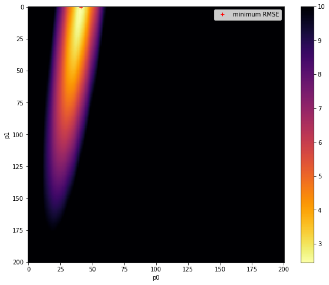

050 Models : Answers to exercises
Exercise 1
In a file lut_RMSE.py do the following:
import numpy as np
# define the min and max and step for the grid we want
p0min,p0max,p0step = 0.0,10.0,0.05
p1min,p1max,p1step = 0.0,0.001,0.000005
gridp0,gridp1 = np.mgrid[p0min:p0max+p0step:p0step,\
p1min:p1max+p1step:p1step]
-
Write a function
gen_lutto return a 2D parameter (Look up table -- LUT) grid usingnp.mgridas above asparam = [gridp0,gridp1]# simple model def model(driver,param): '''2-parameter quadratic model with noise''' return param[0] + param[1] * driver * driver -
Write a function
modelto describe the model we will be using from the code above# code to use # time driver every 4 days for measurement tmdriver = np.arange(0,365,4,dtype=np.int) # generate a pseudo-measurement p0 = np.array([5.0,0.0005]) measure = model(tmdriver,p0) + 5*(np.random.random(tmdriver.shape)-0.5) # just make up some weights for this exercise measure_weight = (2 + np.random.random(tmdriver.shape))/4 -
Write a function
gen_measto generate a pseudo-measurement based on the model and some noise. It should print the value of the parameters used in the model, and returntmdriver, measure, measure_weightcorresponding to:* tmdriver: array of (Nm,) floats of the day of year on which to do modelling * measure: array of (Nm,) floats of measurements over sampled days of the year * measure_weight: array of (Nm,) floats of the weights associated with the measurements -
Write a function
lut_RMSEthat takes as inputs:* `param`: list of `[p0,p1]` with `p0` and `p1` being arrays of shape `(Np0,Np1)` representing a the LUT grid over parameter space * `tmdriver`: array of (Nm,) integers: the days on which the measurements occur * `measure:` array of (Nm,) floats of measurements over sampled days of the year * `measure_weight`: array of (Nm,) floats of the weights associated with the measurements
That runs the model model(tmdriver,param), calculates the weighted RMSE between the measurements and the modelled values for each parameter pair, and returns a grid of shape (Np0,Np1) values of RMSE associated with each parameter pair.
-
Write a function
runner()that- generates tmdriver, the array of (92,) floats for every 4 day of year on which to do modelling
- gets a LUT
paramfromgen_lut - gets a pseudo-measurement from
gen_meas - gets a 2-D array of RMSE corresponding to the parameter grid
- calculated and prints the value of the parameters corresponding to the minimum RMSE,
- returns the RMSE array, the LUT, and the measurements
-
Run
runner()in a notebook - Plot the RMSE values returned from this as an image
- Verify that you have identified the minimum RMSE
- Set different parameters in
gen_measto generate a different pseudo-measurement and repeat the process. - Comment on the results
# ANSWER
# run your own script
!geog0111/lut_RMSE.py
original parameters: [0.4, 0.0002]
min rmse
2.4414406001331534
index: 1447: 0.35000000000000003,0.0002
parameters: 0.35000000000000003 0.0002
# ANSWER
import numpy as np
# Run runner() in a notebook
from geog0111.lut_RMSE import runner, model, gen_lut
RMSE,param,(measure,measure_weight,tmdriver) = runner()
original parameters: [0.4, 0.0002]
min rmse
2.450846276410498
index: 1848: 0.45,0.00019500000000000002
parameters: 0.45 0.00019500000000000002
# confirm: same as in runner?
# use argmin to find min, but need to flatten/reshape arrays first
p0,p1 = param
p0_ = np.ravel(p0)
p1_ = np.ravel(p1)
# min over time axis
imin = np.argmin(RMSE,axis=0)
print(f'index: {imin}: {p0_[imin]},{p1_[imin]}')
# back to 2D
ip0min,ip1min = np.unravel_index(imin,p0.shape)
p0min = p0[ip0min,ip1min]
p1min = p1[ip0min,ip1min]
p = np.array([p0min,p1min])
print(f'parameters: {p[0]} {p[1]}')
index: 1848: 0.45,0.00019500000000000002
parameters: 0.45 0.00019500000000000002
import matplotlib.pyplot as plt
# Plot the reshaped RMSE values returned from this as an image
# plot it
fig, axs = plt.subplots(1,1,figsize=(10,8))
im = axs.imshow(RMSE.reshape(p0.shape),interpolation="nearest",\
vmax=10,cmap=plt.cm.inferno_r)
fig.colorbar(im, ax=axs)
axs.set_xlabel('p0')
axs.set_ylabel('p1')
plt.plot([ip1min],[ip0min],'r+',label="minimum RMSE")
axs.legend(loc='best')
<matplotlib.legend.Legend at 0x7ff931478110>

import numpy as np
from geog0111.lut_RMSE import gen_meas,model,lut_RMSE
# change the original parameters
tdriver = np.arange(0,365,1,dtype=np.int)
# gets a LUT `param` from `gen_lut`
param = gen_lut()
# gets a pseudo-measurement from `gen_meas`
tmdriver,measure,measure_weight = gen_meas(p0=[0.7,0.0005])
# gets a 2-D array of RMSE corresponding to the parameter grid
RMSE = lut_RMSE(param,tmdriver,measure,measure_weight)
# calculated and prints the value of the parameters corresponding to the minimum RMSE,
min_rmse = RMSE.min()
print(f'min rmse\n{min_rmse}')
# use argmin to find min, but need to flatten/reshape arrays first
p0,p1 = param
p0_ = np.ravel(p0)
p1_ = np.ravel(p1)
# min over time axis
imin = np.argmin(RMSE,axis=0)
print(f'index: {imin}: {p0_[imin]},{p1_[imin]}')
# back to 2D
ip0min,ip1min = np.unravel_index(imin,p0.shape)
p0min = p0[ip0min,ip1min]
p1min = p1[ip0min,ip1min]
p = np.array([p0min,p1min])
print(f'parameters: {p[0]} {p[1]}')
min_rmse = RMSE.min()
fig, axs = plt.subplots(1,1,figsize=(10,8))
im = axs.imshow(RMSE.reshape(p0.shape),interpolation="nearest",\
vmax=10,cmap=plt.cm.inferno_r)
fig.colorbar(im, ax=axs)
axs.set_xlabel('p0')
axs.set_ylabel('p1')
plt.plot([ip1min],[ip0min],'r+',label="minimum RMSE")
axs.legend(loc='best')
original parameters: [0.7, 0.0005]
min rmse
2.3962827740874
index: 1910: 0.45,0.000505
parameters: 0.45 0.000505
<matplotlib.legend.Legend at 0x7ff931449d10>

import matplotlib.pyplot as plt
# error bars
std = 1./np.sqrt(measure_weight) * 1.96
# time driver every day
tdriver = np.arange(0,365,1,dtype=np.int)
# get the parameters we siolved for
p = np.array([p0min,p1min])
print(p)
output = model(tdriver,p)
# plot
fig, axs = plt.subplots(1,1,figsize=(10,3))
axs.set_xlim(0,365)
axs.plot(tdriver,output,'k',label='modelled values')
axs.errorbar(tmdriver,measure,yerr=std,ls='none')
axs.plot(tmdriver,measure,'r+',label='measured values')
# set legend now
axs.legend(loc='best')
axs.set_xlabel(f'time / days')
print(f'measurements: tmdriver shape {tmdriver.shape}')
print(f'model output: tdriver shape {tdriver.shape}')
[0.45 0.000505]
measurements: tmdriver shape (92,)
model output: tdriver shape (365,)

# Comment on the results
msg = '''
We confirm the findings above, but are now able to see the form of the error surface in much greater detail.
'''
print(msg)
We confirm the findings above, but are now able to see the form of the error surface in much greater detail.